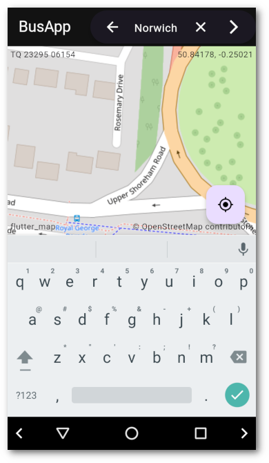
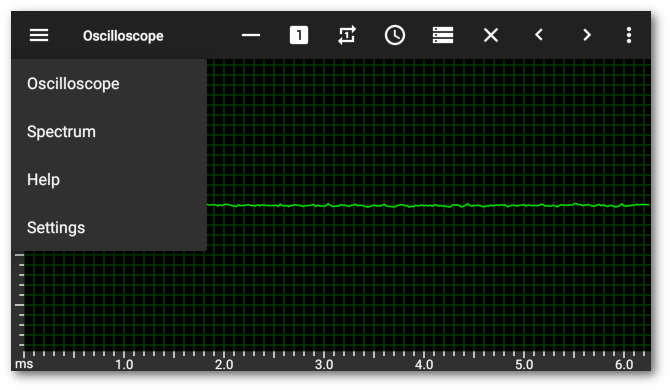

Beach Villas
On a variety of holidays we have come across a wide range of interesting development opportunities.
Irish rural retreat near Cahir, Ireland. Some rethatching required.

Pretty Welsh country cottage near Caerphilly, UK. Natural slate roof.
On the beach at Zahora, Costa de Luz, Spain. This has since been turned into a beach bar. The lighthouse at Trafalgar can be seen in the distance.
Country cottage near Olveira, Galicia, Spain. Sturdy chimney.
Read more →Flutter app bar search widget
As an exercise I decided to reimplement my Buses app in flutter. To do this I need an open street map library, a beautiful soup library, a location library, an OS ref library, and a search widget. All of these are available in pub.dev, except a suitable search widget. All implementations of SearchBar in the docs include an annoying dropdown suggestions feature, which appears to be mandatory.

However it is possible to take the SearchBar and include it in an AppBar, change the icons and end up with something which looks and acts very similarly to an android search widget. To do this, add code to the actions of the app bar which either shows an icon button or the search bar, controlled by a boolean which is set by pressing the search button. The search bar is wrapped by an Expanded widget to stop it overflowing the display. The search bar has a leading button which dismisses it, a conditional trailing button to clear the search field and a button to do the search.
Read more →Android Navigation Menu
Android versions from android 5 use a Toolbar as the ActionBar, but there appears to be no obvious API access.
However, by traversing the view hierarchy, it can be found and used to set up app navigation.

Create a recursive function to traverse the views and find the toolbar.
// findToolbar
private Toolbar findToolbar(ViewGroup group)
{
View result = null;
final int count = group.getChildCount();
for (int i = 0; i < count; i++)
{
View view = group.getChildAt(i);
if (view instanceof Toolbar)
return (Toolbar) view;
if (view instanceof ViewGroup)
result = findToolbar((ViewGroup) view);
if (result != null)
break;
}
return (Toolbar) result;
}
Having written this hack, I then discovered a more efficient way using built in functionality.
Read more →Update App Widget
Android app widgets normally can be set up to update periodically, but not repeatedly for a short period. For a bus times app I need the widget to update every 30 seconds for about 5 minutes.
I already had a Service set up to update the widget from a suitable web site and using a Handler to reset the progress bar if the background update process failed.
public static final int RESET_DELAY = 5 * 1000;
public static final int REPEAT_DELAY = 30 * 1000;
public static final int STOP_DELAY = 5 * 60 * 1000;
private Handler handler;
private boolean stopUpdate;
// onCreate
@Override
public void onCreate()
{
// Get handler
handler = new Handler(Looper.getMainLooper());
if (BuildConfig.DEBUG)
Log.d(TAG, "onCreate " + handler);
}
Define the various delays and get a handler in the onCreate() method.
Turkey Cabbage Wraps
Our neighbour has been giving us large kale–like leaves from his purple sprouting broccoli plants, which are quite tasty. I decided to look up what could be done with large cabbage leaves and decided on wraps with a tomato sauce over the top.
Ingredients
- 250g minced turkey thigh
- An onion, finely chopped
- A garlic clove, crushed
- A carrot, grated
- 50g porridge oats
- Small stick of celery, chopped
- A mushroom, chopped finely
- An egg
- Black pepper
- Olive oil
- Enough cabbage leaves for six wraps
- A jar of pasta sauce or tin of chopped tomatoes
- Grated cheese for topping
Method
- Cut the tough stems out of the leaves and cook them gently in just enough water until limp enough to wrap around the ingredients.
- Put some olive oil, the onions, garlic, carrot, celery and mushrooms in a medium skillet and cook gently, covered, until looking done, then add the oats and cook a bit more.
- In a large bowl crack the egg, grate over some black pepper, and whip until combined.
- Add the turkey, wait for the veg mixture to cool down, then add it to the bowl.
- Mix it all up until well combined.
- Lay out each leaf on a chopping board or similar, put a large heaped tablespoon of turkey mixture on each one, and roll it up. If the leaves are wide enough, tuck the sides in before rolling. You may need two leaves for each wrap if they are long narrow ones. You should end up with six wraps.
- Place the wraps in a suitable casserole dish and cover with sauce or chopped tomatoes. Grate some cheese over the top.
- Cook in a medium oven for about 40 minutes until the sauce is bubbling and the cheese is melted and browning.